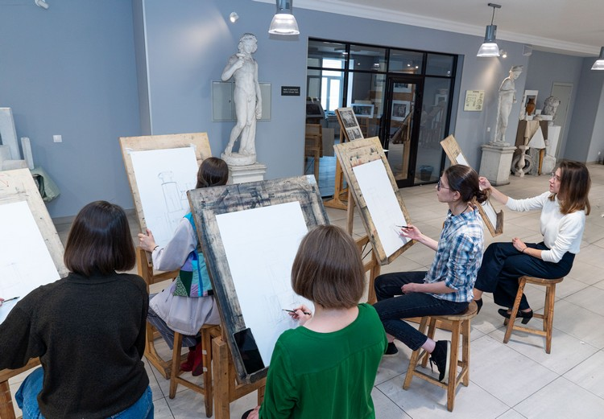

Курсы |
||
|
Поступление на факультет архитектуры Получаемые знания и навыки обучения на факультете архитектуры |
В Санкт-Петербургском государственном архитектурно-строительном университете ежегодно осуществляется более 90 дополнительных образовательных программ. Их реализацией занимаются созданные для этих целей подразделения дополнительного образования: Институт повышения квалификации и профессиональной переподготовки специалистов и Подготовительный центр архитектурного факультета.
Основным видом деятельности Института повышения квалификации и профессиональной переподготовки специалистов СПбГАСУ является обучение по программам профессиональной переподготовки, повышения квалификации, специализированных курсов и информационно-обучающих семинаров. Образовательные программы Института повышения квалификации помогают специалистам строительного, жилищно-коммунального и автодорожного комплексов повысить свой профессиональный уровень.
Подготовка к поступлению в бакалавриат: Программа направлена на подготовку абитуриентов к дополнительным вступительным испытаниям профессиональной направленности, таким как рисунок фрагмента интерьера и объёмная архитектурная композиция Традиционный режим обучения: Режим занятий: два раза в неделю по 4 академических часа (1 – рисунок, 2 – композиция). Продолжительность курсов: 3 месяца, 5 месяцев, 7 месяцев. Интенсивный режим обучения: Интенсив проводится во время осенних, зимних, весенних школьных каникул (1 неделя) и в течение 2 недель (летом) перед вступительными испытаниями на архитектурный факультет. Занятия проводятся с понедельника по субботу по 8 академических часов в день (4 ак. ч. – рисунок и 4 ак. ч. – композиция).  |
Курсы |